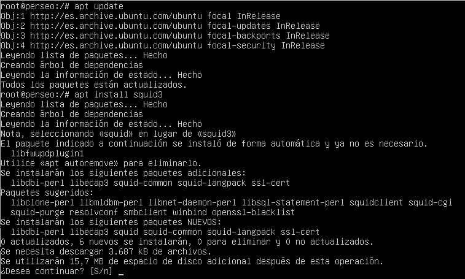
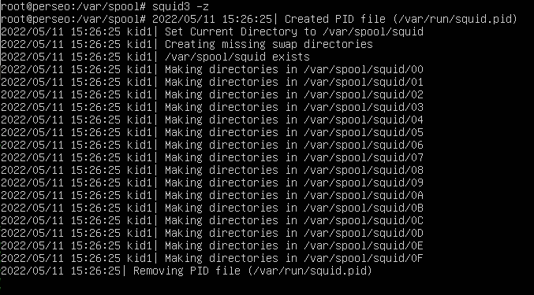

2.1 Implementación de un proxy caché con Squid3 en Ubuntu Server
1. Introducción
Cuando el acceso a internet por parte de los equipos de la red supone un cuello de botella en las comunicaciones de una empresa, suele ser buena idea incorporar un proxy a tu red.
En este capítulo se va a instalar Squid sobre un Ubuntu Server ubicado en la red interna para que el resto de equipos le realicen a él las peticiones HTTP, FTP, email, etcétera. En los equipos clientes habrá que configurar en los navegadores web el proxy para que todas las peticiones a internet pasen por el servidor proxy. Por último, se configurarán unas reglas en el firewall ( IP --> Firewall --> Filter Rules) del router BackEnd para impedir que los clientes se salten el proxy, es decir, sólo se permitirá el acceso a internet cuando las peticiones vengan del servidor proxy ubuntu server, de esta manera, se optimizará el uso de la red WAN por parte de los equipos de la red interna.
Partiendo de la infraestructura de red que se implementó en la unidad de trabajo anterior, donde se tienen 2 routers Mikoritk que implementan el esquema de 2 DMZ'z, se añade un nuevo equipo en la red interna que hará de servidor proxy. Para este caso, se creará una máquina virtual con ubuntu server 20.04 para que posteriormente se realicen las instalaciones y configuraciones pertinentes para conseguir el objetivo de este capítulo. El esquema de red a implementar es el siguiente:
Figura 1. Esquema de red - Proxy Squid en ubuntu server con 2 DMZ Mikrotik.
2. Instalación y configuración de Squid en Ubuntu Server
A continuación se describe el proceso de instalación y configuración de squid en el equipo ubuntu server de la red interna.
1. Instalar squid3
En primer lugar hay que realizar una actualización de los repositorio y a continuación, se instala el paquete squid3.

Figura 2. Instalación de squid3.
2. Configuración del proxy squid3
Para comenzar con la configuración, hay que acceder al fichero de configuración de squid3 que está en /etc/squid/squid.conf.
Crear acl localnet
Si se observa la sección TAG: acl, se puede observar que las acl's siguen el siguiente formato:
acl aclname acltype argument ...
acl aclname acltype "file" ...
Donde,
- aclname es el nombre descriptivo que se le pondrá a la acl.
- acltype es el tipo de acl que se está definiendo.
- argument es la lista de parámetros separados por espacios. Por ejemplo, la lista de sitios web permitidos. "file" es el nombre y ruta completa de una archivo que contiene una lista de parámetros, cada uno de ellos en una línea. Por ejemplo, los dominios destino a los que no se permite acceder.
A continuación, se puede observar la sintaxis de algunas algunos tipos de acl recogidos en el fichero /etc/squid/squid.conf:
#
# acl aclname dst [-n] ip-address/mask ... # URL host's IP address [slow]
# acl aclname dstdomain [-n] .foo.com ...
# # Destination server from URL [fast]
# acl aclname time [day-abbrevs] [h1:m1-h2:m2]
Una vez definido el formato de las acl, el siguiente paso es localizar la cadena localnet (en nano pulsar Ctrl+W) para crear la acl asociada a la red interna, el resto de acl's, se comentarán. Para este caso, dado que la red interna es la 192.168.2.0/24, la línea quedaría así:
acl localnet src 192.168.2.0/24
Figura 3. Establecer acl localnet src 192.168.2.0/24.
La siguiente modificación que hay que realizar en el fichero squid.conf es indicar que permita el acceso al proxy no solo desde localhost sino también de localnet (red interna), para ello, se añade la siguiente directiva:
http_access allow localnet
Figura 4. Permitir el acceso desde la red local.
A continuación, se comprueba el puerto a la escucha del proxy ya que será necesario a la hora de configurar el proxy en los navegadores de los equipos clientes de la red interna. Como se puede ver en la figura inferior, el puerto a la escucha es el 3128.
Figura 5. Puerto a la escucha.
La siguiente comprobación está relacionada con la cache, donde se indica la cantidad de memoria RAM que se utilizará para la caché, para ello, se busca la cadena cache_mem. Como se puede observar, está comentada la línea y por defecto el tamaño es de 256 MBytes, por lo tanto, se descomenta y se deja el valor por defecto. El valor se tendrá que ir ajustando según necesidad.
Figura 6. Tamaño de la RAM para la caché.
La última comprobación está relacionada con la cache del disco, para ello, se busca la cadena cache_dir. Como se puede observar, está comentada la línea, por lo tanto, se descomenta y se le indica que utilice el disco duro para la caché donde:
- ufs: Sistema de archivos que usará.
- /var/spool/squid: Lugar donde almacenará la caché.
- 100, 16, 256: 100 MBytes de espacio del disco duro a utilizar, 16 directorios de primer nivel que creará y 256 directorios de segundo nivel que va a crear por cada directorio de primer nivel.
Figura 7. Tamaño del disco para la caché.
3. Crear la estructura en /var/spool/squid
En primer lugar, hay que asegurarse que el usuario proxy tiene permisos de escritura en el directorio squid ubicado en /var/spool. Si se observa la figura inferior, sí se tiene permiso de escritura para el usuario.
Figura 8. Comprobación de permisos.
Antes de comenzar a crear la estructura hay que para el servidor proxy mediante el comando systemctl stop squid.service.
Figura 9. Parada del servicio.
Una vez se tiene el servicio parado, hay que ejecutar el siguiente comando que creará los 16 directorios de 1er nivel y en cada uno de ellos, los 256 directorios de 2º nivel.
root@perseo:/var/spool#squid3 -z

Figura 10. Creación de la estructura de directorios.
Una vez creada la estructura de carpetas, hay que iniciar el servicio:
root@perseo:/var/spool#systemctl start squid.service.
3. Configurar regla en Mikrotik BackEnd
El siguiente paso es configurar el firewall BackEnd para que los usuarios de la red interna no puedan saltarse el proxy a la hora de navegar en internet. Para ello, hay que crear una nueva regla en IP > Firewall > Filter Rules > Add, con lo siguiente:
- Chain: forward (tráfico que pase por el router).
- Src.Address: !192.168.2.254 (las que no sean las del servidor proxy).
- Procolo: tcp.
- Dst.Port: 80,21,443, 1080 (los puertos que el navegador busca a través del proxy).
- In. Interface: ether2.
- Out. Interface: ether1.
- action: reject.
La regla quedaría así, donde se desplaza a la posición 1 para que tenga efecto.
Figura 11. Regla en el firewall.
4. Configurar el cliente y pruebas
Por último, se configuran los navegadores web de los distintos equipos clientes de la red interna para que lo hagan vía el proxy.
Como ejemplo, se configura el navegador firefox en un equipo Ubuntu Desktop de la red interna (intnetA).
{kind=link}
Figura 12. Configuración del proxy en el navegador Firefox.
Si se accede desde otro equipo (Windows 10) sin haber configurado el proxy en el navegador, se puede observar que no tiene acceso a internet.
{kind=link}
Figura 13. Sin acceso a internet por no tener configurado el proxy en el navegador.
5. Comprobaciones
Si se accede al log de squid, ejemplo al fichero access.log, se pueden observar las conexiones que se han ido realizando en el proxy.
root@perseo:/var/spool#cat /var/log/squid/access.log
Figura 14. Log de accesos al proxy.
Por último, si se comprueba un resumen del espacio de caché almacenado en el directorio /var/spool/squid, se puede observar que no llega a 20 Mbytes ya que no se han realizado muchas peticiones a internet.
root@perseo:/#du /var/spool/squid
Figura 15. Resumen del espacio de caché.
6. Referencias
Obra publicada con Licencia Creative Commons Reconocimiento No comercial Compartir igual 4.0